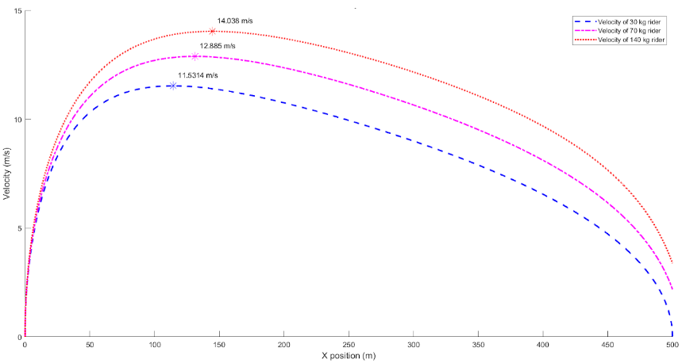
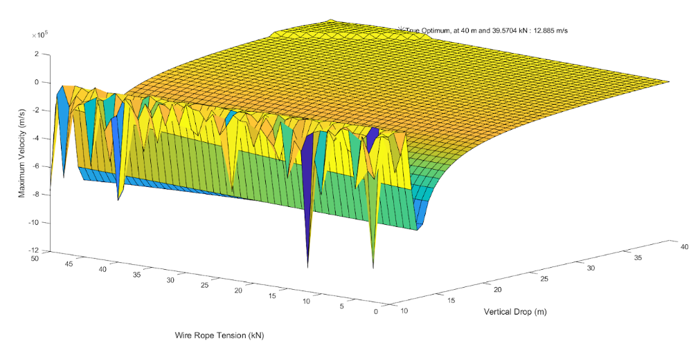
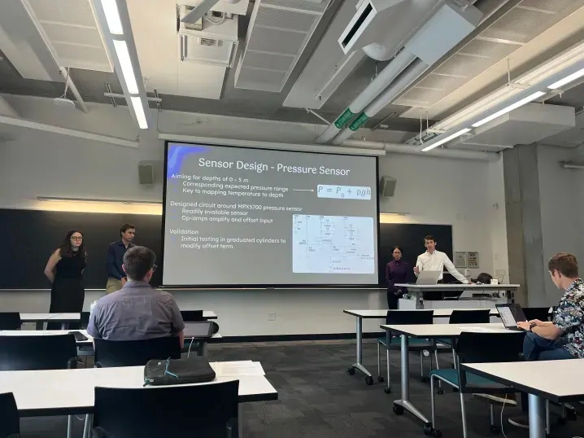
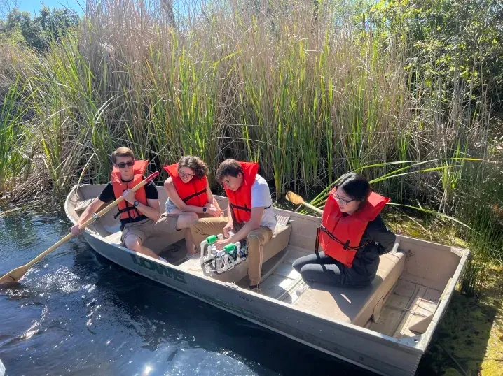
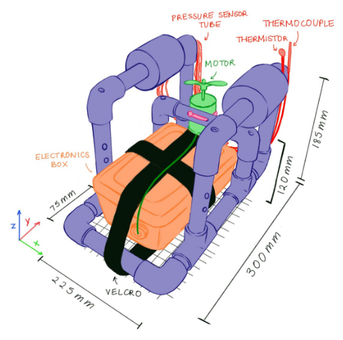

Analysis & Optimization
E72 Zipline Optimization Problem
E72 is easily one of the most difficult classes I’ve ever taken. With both speed and rigor, it moves students along through a variety of important mathematical and systems engineering skills, from Fourier Transforms to differential equations to optimization algorithms, while simultaneously teaching them (or rather, teaching them to teach themselves) MATLAB. Many long nights of difficult problem sets culminated in the notorious final homework assignment, in which students calculate a zipline’s optimal vertical drop and wire rope tension to meet exit velocity constraints while maximizing the speeds that one of three weight classes of riders will experience.



As described in the full PDF, my approach was to compute information for all three weight classes to meet the velocity constraints, by interfacing with a master script that computed the optimal zipline parameters, then passed them into a third file to generate plots and verify the constraints. Through this assignment and many other challenges, including by taking advantage of quintessential MATLAB tools such as anonymous functions and fmincon, I became much more confident in my analytical intuition, MATLAB capabilities, and ability to stick through a difficult problem and debug confusing code.
E80 Technical Memorandum & Team Report
Beyond requiring that students conduct robot design and circuit debugging, another way in which E80 really did transform me and my peers into “real engineers” was through its emphasis on other elements of engineering, such as the physical theory and mathematics behind fluid dynamics, similitude for modeling, data regression, and more. For example, while producing calibration curves to map sensor voltage outputs to the ranges of physical meaaurements they correspond to, I created this handy linear regression template. Beyond developing technical skills such as these, E80 improved my ability to interact with team dynamics and delegate tasks, which has helped me serve as a better leader in extracurricular organizations including Mudd’s engineering clubs.

My teammates Naomi, Troy, and Tali began by developing the toolsets we would need to create our own autonomous underwater vehicle (AUV) through a series of labs. We split up our tasks across a huge variety of areas, each of us getting to explore everything from Arduino programming, to MATLAB data collection, to COMSOL computational fluid dynamics, to Excel data analysis, to hands-on circuit design and assembly. We then modified the base E79 robot to incorporate a set of sensors for our deployment at Dana Point in Long Beach, California, as seen in Naomi’s incredible diagram below. Our experiment compared the measurement accuracy of a thermistor and a thermocouple, by reading the temperatures using both at depths determined via pressure sensor. Below is my team testing our AUV at an artificial lake just north of Harvey Mudd’s campus, prior to the final deployment. From here, we identified and debugged issues, such as leakage into our electronics box via capillary action in the thermocouple’s insulation tubes. Findings from both our testing and final deployment are elaborated upon in my team’s final report.



Every lab was followed by individual writeups through which students also advanced our technical writing and analysis skills. Each writing assignment focused on a particular toolset, such as statistical analysis or figure organization and description, culminating not only in that final report but also a technical memorandum focusing on findings from our fluid dynamics lab activity. This “tech memo” expanded upon information about similitude covered in both E80’s video lectures and even an E72 assignment, and helped me finally truly connect the dots between theory and application of information from prior physics classes. As an example, one important conclusion that I arrived at, which was directly applicable to my team’s later work, was that our robot didn’t need to be redesigned for better hydrodynamics to move underwater, since COMSOL simulation and wind tunnel testing on a scale model predicted sufficiently small drag.